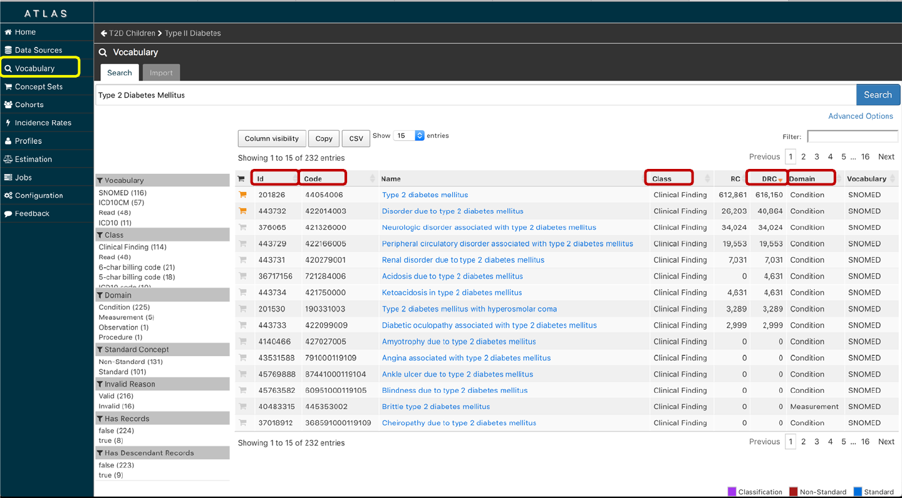

OHDSI ATLAS 简介
翁春华
哥伦比亚大学医疗信息学系副教授
美国医学信息学院当选成员
1
Chunhua Weng, PhD, FACMI
Associate Professor of Biomedical
Informatics
Columbia University, New York City
August 21, 2017, Hangzhou, China, OHDSI-China Meeting

讲座结束后，希望您能够
1. 熟悉ATLAS 的适用和功能
2. 使用ATLAS 选择有特定临床特征的病人组并对
他们进行分析
2

Why OHDSI?
•观察性研究(Observational Studies)是任何随机临床测试试验
(RCT)的必要先导(Precursor)；前者发现问题，提出假设，积累
证据；后者用最严格的实验设计验证假设。
•利用OHDSI 的大数据和工具，研究人员可以
o刻画临床特征 (what happened to the patients?)
糖尿病人吃什么药？那些有并发症？他们对治疗的响应如何？
o基于人群的估计 (what are the causal effect?)
哪种糖尿病治疗方案最佳？
o基于病人个体的预测 (what will happen to patient X?)
哪个病人更适合哪种治疗方案？
3
用观察型研究指导临床测试设计
•设计应用符合研究的病人条件 (inclusion and exclusion
criteria)
•进行观察性研究来指导RCT 设计和目标制定
•展示药物在临床的使用及其安全性
4

ATLAS 是什么？
•一个免费网络开源软件工具
•定义查询病人的条件 （比如，近五年
内有二型糖尿病但没有高血压）
•运用查询条件找到符合条件的病人
•分析病人的特征
•对病人特征的描述可分享，重用，可
自动在不同系统间转换 JSON, SQL,
etc.
Atlas 工作流
设计一个研究
（定义目标人
群，比较人群，
结果评估，统
计分析，等等）
创建病人组和
必须的概念集
建立统计分析
流程
输出临床协议
和分析代码
ATLAS 病人定义的抽象模型:
Everything is a concept
7
有糖尿病
的人群
对应变量和规则：
有不正常血糖的病人
有在服用糖尿病相关药物的病人
有病历里含有二型糖尿病诊断码 (ICD 9, ICD 10, READ, SNOMED) 的病人
有病历里含有相关文字描述(二型糖尿病，DMII，Type 2 Diabetes)的病人
等等
Insulin, Metformin and
its brand names, etc.

ATLAS 能干什么？
1. 浏览数据源
2. 检索术语 Vocabulary
3. 定义术语集 Concept Set
4. 定义病人组和他们的临床特征
5. 查询数据库找到符合条件的病人组
6. 可视化单独病人的情况
7. 做人群的效果估计
8
1. 浏览数据源
9
10
1. 浏览数据源

11
2. 检索术语 Vocabulary

2. 检索术语 Vocabulary
•ID: a unique concept ID in OHDSI OMOP CDM
•Concept Code: concept identifier in the source
vocabulary
•Class: categories defined by the source vocabulary
•RC: The record count. This will show the number of
records that are coded with this concept in the
•DRC: The descendant record count. The DRC column will
show the sum of all descendant concepts that are coded
in the CDM.
•Domain: categories defined by the OMOP CDM (e.g.,
Condition, Person, Observation, Specimen, etc)
12

3. 定义术语集 Concept Set
•什么是 concept set?
They are lists of concepts from the standardized
vocabulary that taken together describe a topic of
interest for a study.
•为什么要 concept set？
便于随意选择组合概念集以适用于不同场景
13
•Exclude: Selecting this checkbox will prevent that concept
from being used in the concept set.
•Descendants: Selecting this check box will use the vocabulary
relationships to automatically select all descendants. If this
option is used in conjunction with the exclude option, it will
exclude the current concept and all descendants.
•Mapped: Selecting this check box will use the vocabulary
relationships to automatically select all concepts mapped to
the selected concept.
3. 定义术语集 Concept Set
15
3. 定义术语集 Concept Set
4. 定义病人组和他们的临床特征
16
Cohorts
•Concept sets
which are used in
the cohort
definition will
be listed under
the “Concept
Sets” tab

定义病人组
•主要事件 Primary Event (Start Date)
Cohort definitions can have lots of rules
But the primary event is the bouncer Have to clear this bar
for the rest of the rules to come into play
Besides being the first rule, the primary event is critical
because it sets the
index date
•符合的条件 Qualifying Criteria
All the other criteria you wish you require of your cohort
members
•退出条件 Exit Criteria (End Date)
Defines the end date of the individual in the cohort
18

Index Date
•The patient’s index date (aka cohort start date) is
determined by when they satisfy the primary event
•The cohort start date can be limited to just first time
a patient meets it or you can count every time they meet
it
•Subsequent criteria are very commonly tied relative to
the index date
19

Qualifying Criteria
•All the other criteria you wish you require of
your cohort members Noting that it is still the
primary event that will mark their point of entry
in the cohort
•Can have AND or OR logic
•Can apply the same filters as primary event
•Temporal limitations relative to index
20

Cohorts 其他工具
•Reporting - The reporting tab provides cohort
summarization and visualization tools
•Explore – 可视化病人信息
•Export – 查看源码，XML, JSON, SQL, etc.
可分享的人群组定义
22
可分享的人群组定义
23
可分享的人群组定义
24
可分享的人群组定义
25
5. 查询数据库找到符合条件的病人组
26
Profiles, Jobs and Configuration
•Profiles – Patient level information visualization
•Jobs – Jobs those are running in the background
•Configuration - Select the “configuration” menu
item to review the data sources that have been
configured in the source configuration section. This
screen will let you review options. At this time, it
cannot be used to edit the configuration - that must
be done directly in the database.
Export Your Study – Protocol
Export Your Study – R codes
30
谢谢您的兴趣和加入！